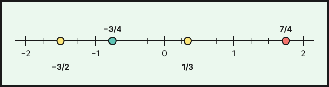

Números racionales
1. Divisibilidad: factores, múltiplos y divisores
Un número es primo si solo tiene dos divisores: el 1 y él mismo (\(2,\ 3,\ 5,\ 7,\ 11,\ 13,\dots\)). Todo número natural se puede escribir de una única forma como producto de primos (factorización):
\[210=2\cdot3\cdot5\cdot7 \qquad 270=2\cdot3^3\cdot5 \qquad 66=2\cdot3\cdot11\]
Con las factorizaciones se calculan:
- m.c.d. (máximo común divisor): producto de los factores comunes, con el menor exponente.
- m.c.m. (mínimo común múltiplo): producto de los factores comunes y no comunes, con el mayor exponente.
Ejemplo: \(18=2\cdot3^2\) y \(20=2^2\cdot5\). Entonces \(\text{m.c.d.}(18,20)=2\) y \(\text{m.c.m.}(18,20)=2^2\cdot3^2\cdot5=180\).
El m.c.d. sirve para repartir en partes iguales y para simplificar fracciones. El m.c.m. sirve para saber cuándo coinciden dos sucesos periódicos y para reducir fracciones a común denominador.
Ejemplo: dos autobuses salen a la vez de la estación. Uno pasa cada 18 minutos y el otro cada 20. Volverán a coincidir dentro de \(\text{m.c.m.}(18,20)=180\) minutos, es decir, 3 horas.
2. Fracciones y números racionales
Una fracción \(\dfrac{a}{b}\) (\(b\neq0\)) representa \(a\) partes de un total dividido en \(b\) partes iguales. El numerador \(a\) dice cuántas partes tomamos y el denominador \(b\) en cuántas se divide el total. Si \(\dfrac{a}{b}\) es negativa, el signo se escribe delante o en el numerador:
\[\frac{-3}{5}=-\frac{3}{5}=\frac{3}{-5}\]
El conjunto de todos los números que se pueden escribir como fracción de enteros es el de los números racionales, \(\mathbb{Q}\). Contiene a los enteros (\(5=\frac{5}{1}\)) y a los decimales exactos y periódicos.
Fracción de una cantidad. Para hallar \(\dfrac{3}{5}\) de \(9\,600\) kWh se multiplica: \(\dfrac{3}{5}\cdot9\,600=5\,760\) kWh.
Fracciones equivalentes
Dos fracciones son equivalentes si representan el mismo número. Se comprueba con el producto cruzado:
\[\frac{a}{b}=\frac{c}{d}\iff a\cdot d=b\cdot c\]
Así, \(\dfrac{-6}{5}=\dfrac{-18}{15}\) porque \(-6\cdot15=-90=5\cdot(-18)\), y en cambio \(\dfrac{8}{7}\neq\dfrac{4}{17}\) porque \(8\cdot17=136\neq28=7\cdot4\).
Para obtener fracciones equivalentes se amplifica (multiplicando numerador y denominador por el mismo número) o se simplifica (dividiendo ambos entre un divisor común):
\[\frac{12}{18}=\frac{12:6}{18:6}=\frac{2}{3} \qquad \frac{2}{3}=\frac{2\cdot5}{3\cdot5}=\frac{10}{15}\]
Una fracción es irreducible cuando numerador y denominador no tienen divisores comunes (m.c.d. \(=1\)). La fracción irreducible se obtiene dividiendo entre el m.c.d.
Que el numerador o el denominador sea primo no garantiza que la fracción sea irreducible: \(\frac{7}{14}=\frac{1}{2}\) y \(\frac{165}{11}=15\).
Comparar y ordenar
- Con igual denominador es mayor la de mayor numerador.
- Con distinto denominador, se reducen a común denominador (el m.c.m.) o se pasan a decimal.
- Un número negativo es siempre menor que uno positivo.
Ejemplo: ordenar \(\dfrac{5}{6},\ \dfrac{3}{4},\ \dfrac{7}{9}\). Con denominador común \(36\) son \(\dfrac{30}{36},\ \dfrac{27}{36},\ \dfrac{28}{36}\), luego \(\dfrac{3}{4}<\dfrac{7}{9}<\dfrac{5}{6}\).
3. Operaciones con fracciones
Suma y resta: se reducen a común denominador y se operan los numeradores.
\[\frac{1}{2}+\frac{5}{3}=\frac{3}{6}+\frac{10}{6}=\frac{13}{6} \qquad \frac{3}{4}-\frac{5}{6}=\frac{9}{12}-\frac{10}{12}=-\frac{1}{12}\]
Producto: numerador por numerador y denominador por denominador, simplificando cuando se pueda.
\[\frac{4}{9}\cdot\frac{3}{10}=\frac{12}{90}=\frac{2}{15}\]
Cociente: se multiplica por la fracción inversa.
\[\frac{3}{5}:\frac{9}{10}=\frac{3}{5}\cdot\frac{10}{9}=\frac{30}{45}=\frac{2}{3}\]
Operaciones combinadas. Se respeta la jerarquía: primero paréntesis (de dentro afuera), después potencias, luego productos y cocientes de izquierda a derecha y por último sumas y restas.
\[\frac{1}{2}-\left(-\frac{2}{5}\right)\cdot\frac{1}{3}=\frac{1}{2}+\frac{2}{15}=\frac{15}{30}+\frac{4}{30}=\frac{19}{30}\]
4. Números decimales
Todo número racional se puede escribir como decimal dividiendo numerador entre denominador. Según el resultado:
| Tipo | Ejemplo | Cuándo ocurre |
|---|---|---|
| Exacto | \(\dfrac{3}{4}=0{,}75\) | el denominador, ya simplificado, solo tiene los factores 2 y 5 |
| Periódico puro | \(\dfrac{1}{3}=0{,}\overline{3}\) | el periodo empieza justo tras la coma |
| Periódico mixto | \(\dfrac{7}{6}=1{,}1\overline{6}\) | hay cifras sin repetir antes del periodo |
Los decimales con infinitas cifras que no se repiten (\(\pi=3{,}14159\ldots\), \(\sqrt{2}=1{,}41421\ldots\)) no son racionales: son irracionales.
De decimal a fracción (fracción generatriz)
Exacto: se escribe el número sin coma partido por \(1\) seguido de tantos ceros como cifras decimales.
\[3{,}25=\frac{325}{100}=\frac{13}{4}\]
Periódico puro: (número completo sin coma \(-\) parte entera) partido por tantos nueves como cifras tenga el periodo.
\[0{,}\overline{7}=\frac{7}{9} \qquad 2{,}\overline{36}=\frac{236-2}{99}=\frac{234}{99}=\frac{26}{11}\]
Periódico mixto: (número completo sin coma \(-\) parte no periódica) partido por tantos nueves como cifras tenga el periodo seguidos de tantos ceros como cifras tenga la parte decimal no periódica.
\[1{,}1\overline{6}=\frac{116-11}{90}=\frac{105}{90}=\frac{7}{6} \qquad 0{,}2\overline{45}=\frac{245-2}{990}=\frac{243}{990}=\frac{27}{110}\]
Al redondear a una cifra dada, si la cifra siguiente es 5 o más se sube una unidad; si es menos, se deja igual. Al truncar se cortan las cifras sin más. Por ejemplo, \(\frac{2}{3}=0{,}666\ldots\) se redondea a \(0{,}67\) y se trunca en \(0{,}66\).
5. La recta numérica
Cada número racional ocupa un punto de la recta. Para situar \(\dfrac{7}{4}\) se divide cada unidad en \(4\) partes iguales y se toman \(7\) desde el \(0\): queda entre \(1\) y \(2\) (es \(1{,}75\)). Los negativos se colocan a la izquierda del cero, simétricos de los positivos.

- m.c.d.: factores comunes con menor exponente. m.c.m.: comunes y no comunes con mayor exponente.
- Fracciones equivalentes: \(\frac{a}{b}=\frac{c}{d}\iff a\cdot d=b\cdot c\).
- Sumar y restar: común denominador. Multiplicar: arriba con arriba, abajo con abajo. Dividir: por la inversa.
- Decimal exacto o periódico \(\Rightarrow\) racional; decimal infinito no periódico \(\Rightarrow\) irracional.
- Generatriz: nueves por las cifras del periodo y ceros por las cifras decimales no periódicas.
Debes saber hacer
- Descomponer en factores primos y calcular el m.c.d. y el m.c.m., y usarlos en problemas.
- Simplificar, comparar y ordenar fracciones, y reducirlas a común denominador.
- Sumar, restar, multiplicar y dividir fracciones, y resolver operaciones combinadas con la jerarquía correcta.
- Pasar una fracción a decimal y clasificar el decimal (exacto, periódico puro o mixto).
- Hallar la fracción generatriz de un decimal exacto o periódico.
- Resolver problemas con fracciones de una cantidad.
Saberes de la Orden de 30 de mayo de 2023 (BOJA nº 104) que se trabajan en este tema: MAT.3.A.2.3, MAT.3.A.2.4, MAT.3.A.3.2, MAT.3.A.3.5, MAT.3.A.4.1, MAT.3.A.4.2.